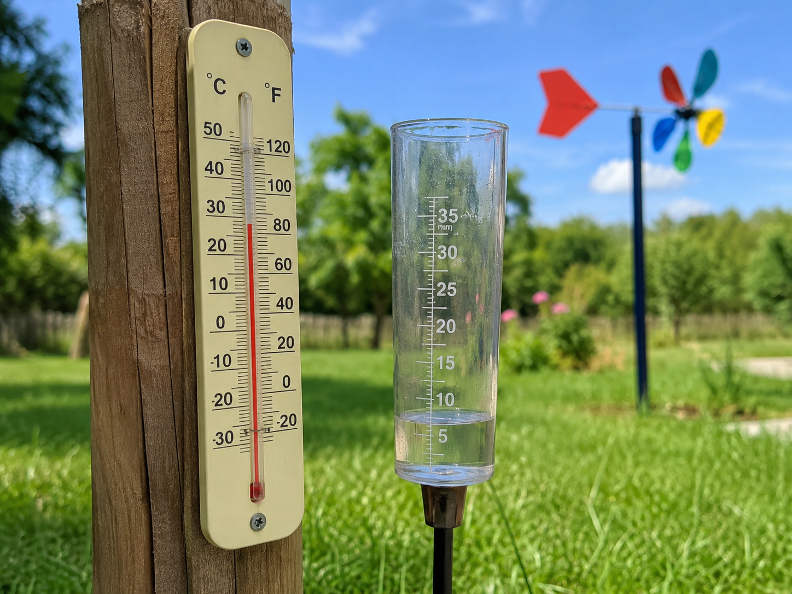
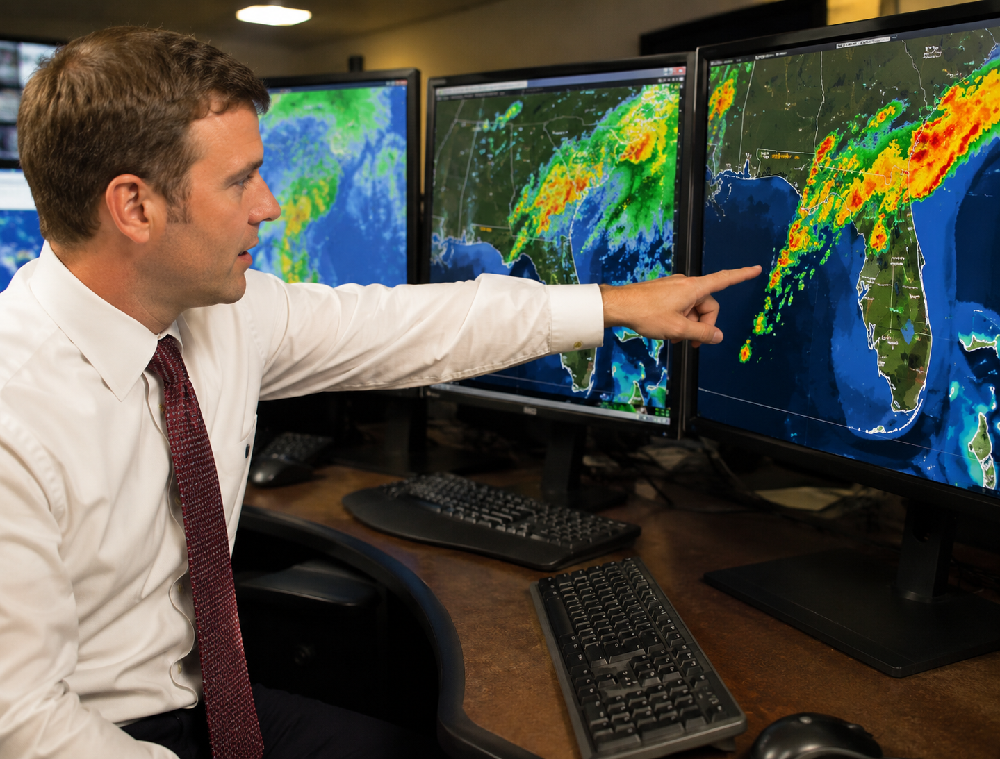

Think about this question as you work through today's lesson. By the end, you should be able to explain what patterns scientists look for — and why those patterns matter.
Start here. Learn the words you will use today.
Before we read anything, look outside a window or step to the door for a moment. What does the sky look like right now? What does the air feel like? What's happening out there?
Good observations are specific. "It's cloudy" is okay. "There are thick, dark clouds low in the sky and the air feels damp" is even better. Scientists pay attention to the details most people walk right past.
These are the words that scientists use when they study weather. Tap each card to flip it and read the definition. You'll see these throughout the lesson — notice them when they come up!
Copy this sentence carefully into your science notebook:
"Scientists record patterns of the weather so they can predict what might happen next."
Now learn the main science idea.

WeatherweatherWhat the atmosphere is like outside at a certain place and time. is what's happening in the atmosphere right now — or over the past few hours or days. It can change quickly. A sunny morning can turn into a stormy afternoon.
Scientists measure several things to describe weather:

One rainy day doesn't tell you much. But what if you recorded weather every single day for a whole month? You'd start to see things repeat. That's a patternpatternSomething that happens in a predictable, repeating way. — something that repeats in a way you can start to predict.
Here are some patterns meteorologists have noticed over time:
- Afternoons are usually warmer than mornings.
- Dark, low clouds often come before rain.
- Some seasons are much wetter or drier than others.
- Summer in Florida brings more thunderstorms than winter does.
Scientists don't just notice these patterns — they write them down. They use tables, charts, and bar graphs to keep track of data over time. The more data you have, the clearer the pattern gets.
| Day | Temp (°F) | Clouds | Rain? | Wind |
|---|---|---|---|---|
| Monday | 78°F | ☀️ Clear | No | Calm |
| Tuesday | 82°F | ⛅ Partly Cloudy | No | Light |
| Wednesday | 85°F | ☁️ Cloudy | Yes — afternoon storm | Gusty |
| Thursday | 80°F | ⛅ Partly Cloudy | No | Calm |
| Friday | 84°F | ☁️ Cloudy | Yes — afternoon storm | Gusty |
🔍 Read the data table. What do you notice?
Look at the table carefully. Which day was the warmest? Which days had rain? Do you see a connection between the clouds and the precipitation?
This is exactly what meteorologists do — they look at a week of data and search for patterns. The more weeks they collect, the stronger the pattern gets.
Think about your week so far. Has the weather been similar each day, or has it changed a lot? What pattern, if any, do you notice?
People sometimes use "weather" and "climateclimateThe usual weather pattern for an area over many years." to mean the same thing — but they're different.
When scientists — called meteorologistsmeteorologistA scientist who studies weather and uses data to predict future conditions. — look at enough weather data over enough time, they can make predictions. If the sky turns dark and the wind picks up, they know from past patterns that rain is probably coming. If it's July in Florida, they know to watch for afternoon thunderstorms.
Those predictions don't just help people plan a picnic — they help communities prepare for dangerous weather like floods and hurricanes. That's real science doing real work.

Weather describes what the atmosphere is doing right now. Climate is the long-term pattern of weather for a place over many years. The two are related — but they're not the same thing.
When scientists record weather data day after day, they start to see patterns. Those patterns let them predict what weather is likely to come next — and help people stay safe when dangerous weather is on the way.
Curious? Go Deeper
How do meteorologists actually predict the weather? They use a huge network of weather stations, radar towers, satellites, and weather balloons — all collecting data at the same time from all over the world. That data gets fed into powerful computer models that simulate how the atmosphere behaves.
Even with all that technology, weather prediction gets harder the further out you go. A one-day forecast is usually quite accurate. A ten-day forecast? It's a reasonable guess, but the atmosphere is complicated enough that small errors early on can lead to big differences later. This sensitivity to small changes is sometimes called the "butterfly effect."
The patterns scientists study aren't just useful for planning your week. Long-term climate records help researchers understand how Earth's atmosphere has changed over centuries — and what might happen in the future.
Now test the idea yourself.
You'll need: Science notebook, pencil, colored pencils, and a way to check today's weather — look outside a window or use a weather app or report.
Today you're starting a Weather Observation Log. Follow each step carefully.
Set up your log. Create a new page in your science notebook. Title it: Weather Observation Log. Write today's date underneath. Leave room — you'll use this same page format for several more days this week.
Record today's conditions in a data table. Draw a table in your notebook with four columns: Temperature, Clouds, Precipitation, Wind. Look outside or check a weather report, then fill in a row for today. Use the actual number for temperature (in degrees). Be specific — "partly cloudy with high thin clouds" is better than just "cloudy."
Draw today's sky. In your notebook, draw what the sky actually looks like — the clouds, sun (or no sun), any rain or wind. Use colored pencils if you have them. Label what you drew.
Write a prediction. Based on what you observed today, what do you predict tomorrow's weather will be like? Write one sentence. Then write one sentence explaining why you think that — what clue from today led you to that prediction?
Weather or climate? Write one sentence: is your observation about today's weather or about the climate of your area? How do you know the difference?
Before moving on, look back at the work you did during the investigation. A good scientist reviews their notes before moving to the next step.
Ask yourself: Did I record specific details — not just "it was warm" but actual temperatures and conditions? Does my prediction connect to something I actually observed? Can I explain my thinking using evidence from my notes?
Think about it: Tell the story of your investigation — what you did, what you noticed, and what you figured out. Use your notebook notes to help you.
Think through each question on your own or talk about them with someone nearby. You don't need to write these down — they're for thinking.
Check what you understand.
Show what you learned.
🔎 Part A — Identify & Label
Look at the five weather conditions from the diagram you explored. In your notebook, draw all five weather symbols and label each one. Under each label, write one example of when that type of weather might happen — be specific about the season or time of day.
📝 Part B — Write & Explain
Think about the weather observation you recorded today.
What did you observe? Describe the specific conditions you recorded — temperature, clouds, precipitation, and wind.
What does that tell you? Based on those conditions, what type of weather pattern might be forming? What do you predict will come next?
Why do you think that? Use one detail from your observation to explain your prediction. Connect it to something you learned about weather patterns today.
🎨 Part C — Draw & Label
Draw a labeled sketch of today's sky in your science notebook. Label at least 4 parts — show the clouds (or lack of them), the sun, any precipitation, and write the temperature in a corner of your drawing. At the bottom, write one sentence describing what you see.
Think about it: Look back at the Notice & Wonder you wrote at the start of today's lesson. Did you observe or predict anything correctly? What would you change about your original prediction now?